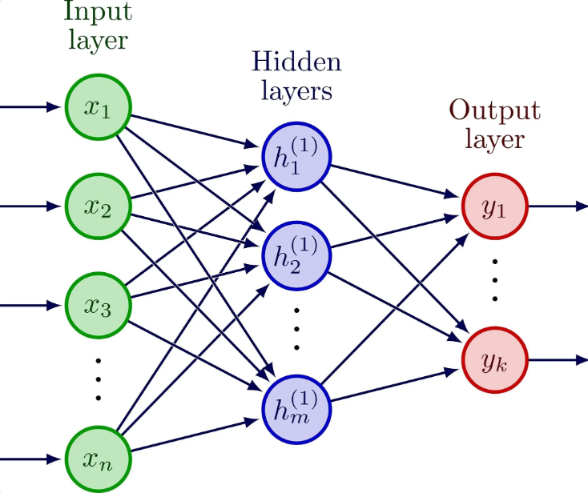
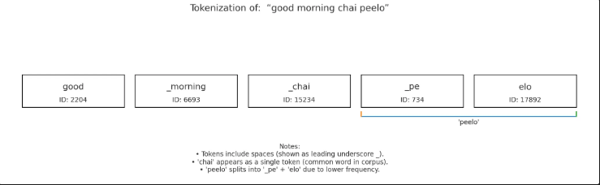
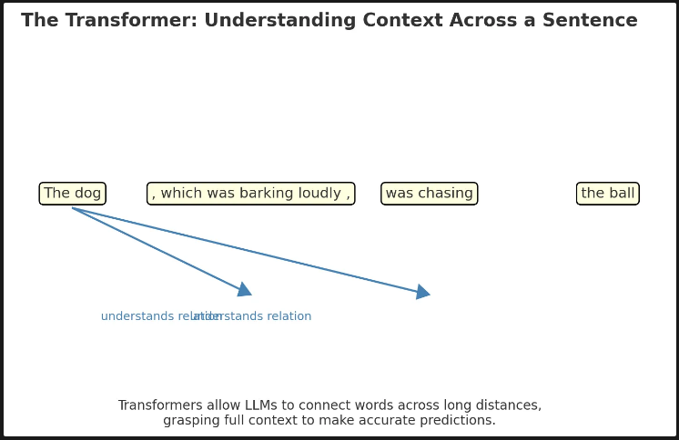
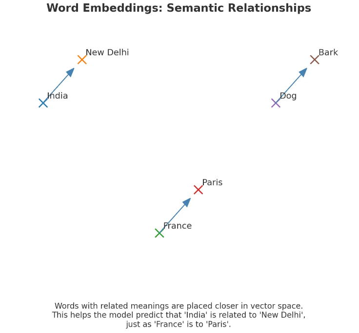
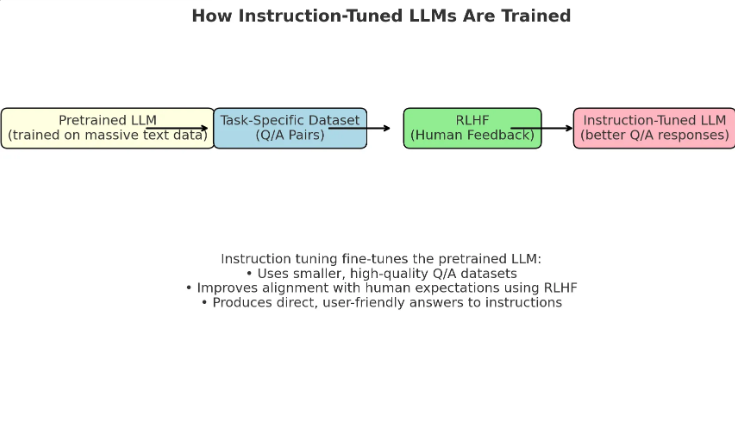
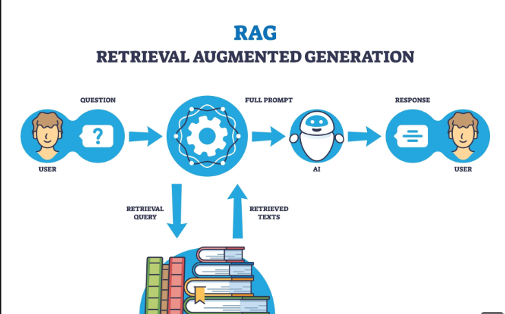

Foundations of Large Language Models
LLMs are trained algorithms that receive text input and predict and generate humanlike text output.

Large
The term “large” refers to the enormous scale of these models, both in terms of the training data they’re trained on and the number of parameters they contain. For example, some models are trained on terabytes of text data and can have billions or even trillions of parameters. These parameters are essentially the numbers that the model learns to adjust during its training to control the output of each neuron and the strength of the connections between them, ultimately allowing the model to make accurate predictions.
Language model
refers to a computer algorithm trained to receive written text (in English or other languages) and produce output also as written text (in the same language or a different one). These are neural networks, a type of ML model which resembles a stylized conception of the human brain, with the final output resulting from the combination of the individual outputs of many simple mathematical functions, called neurons, and their interconnections. If many of these neurons are organized in specific ways, with the right training process and the right training data, this produces a model that is capable of interpreting the meaning of individual words and sentences, which makes it possible to use them for generating plausible, readable, written text.
Let’s say we instruct an LLM to complete the following sentence:
The capital of INDIA is _______.
The LLM will take that input text and predict the correct output answer as New Delhi. This looks like magic, but it’s not. Under the hood, the LLM estimates the probability of a sequence of word(s) given a previous sequence of words.
How LLMs Understand Language?
LLMs don’t read words the way we do. Instead, they break down text into smaller, numerical units called tokens. Think of tokens as the basic building blocks of language for an AI.
What are tokens?
A token can be a whole word, part of a word, a single character, or even a punctuation mark. The goal of a tokenizer the tool that converts text into tokens is to represent common words as a single token. This makes processing more efficient..

While we see “good morning chai peelo” as four words, an LLM sees a sequence of tokens. For example, a tokenizer might break it down like this:
Good(a single token)morning(another single token)chai(a single token)peelo(might be broken into two tokens:peandelo)
Why tokens matter?
By using tokens, models can handle a massive vocabulary more efficiently. Common words get their own unique token, while less common or more complex words are broken down into smaller pieces. This allows the model to work with a manageable number of tokens rather than an overwhelming number of unique words. On average, a single token represents about four characters of text in English, or about three-quarters of a word.
The “Brain” Behind the Model: The Transformer

Think of the transformer as the engine that gives LLMs their incredible power. Its main job is to understand how words relate to each other in a sentence, no matter how far apart they are. For example, in the sentence, “The dog, which was barking loudly, was chasing the ball,” the transformer understands that “was barking” is connected to “the dog,” and “was chasing” is also connected to “the dog.” It’s this ability to grasp the full context of a sentence that allows it to make accurate predictions.
How the Model Learns to Predict
An LLM’s knowledge isn’t magic; it comes from a massive amount of training. By reading countless sentences from the internet, books, and articles, it learns patterns. When it sees “The capital of India is…”, it has seen similar phrases many times. It has also seen that “India” is frequently mentioned with “New Delhi,” just as “France” is with “Paris.” This constant exposure and repetition allow it to predict that “New Delhi” is the most likely and logical word to follow.

The Art of “Prompting”
The instructions you give an LLM are called a prompt. The quality of the output you get depends heavily on the quality of your prompt. Crafting a good prompt is like giving a good set of instructions to a person. A clear, specific, and well-designed prompt will almost always lead to a better response.
Types of LLMs
The most basic type of LLM is a pretrained model. It’s the starting point for all other models.
How it learns: These models learn in a “self-supervised” way. This is different from traditional training where you need a human to label every single piece of data.
Two key learning techniques:
- Predicting the next word: The model is given a sentence and its task is to fill in the blank at the end. For example, it sees “The capital of India is ___” and learns to correctly predict “New Delhi.”
- Predicting a missing word: The model is given a sentence with a word taken out from the middle, like “The ___ of India is New Delhi.” It then learns to figure out that the missing word is “capital.”
These foundational models are powerful, but they are raw. They need a little help (a suitable prefix or prompt) to guide them to give the right kind of answer. The other types of LLMs that come later are built on this base, but with additional training to make them more user-friendly and reliable.
Instruction-Tuned LLMs

Instruction-tuned LLMs are a type of pretrained model that has undergone additional training, or fine-tuning, to make them more user-friendly and effective. This process helps the models respond better to direct questions and instructions, rather than just completing sentences.
How They Are Trained
- Task-Specific Datasets: Researchers create small, high-quality datasets by manually providing examples of good questions and their correct answers. This is different from the massive, self-supervised pretraining data.
- Example: A dataset might contain the pair:
- Q: What is the capital of India?
- A: The capital of India is New Delhi.
- This focused training teaches the model to understand the relationship between a question and a specific, helpful answer.
- Reinforcement Learning from Human Feedback (RLHF): This is a powerful technique where the model learns from human preferences. The manually assembled datasets are enhanced with feedback from users.
- Example: For the question “What is the capital of India?”, a user might prefer the answer “The capital of India is New Delhi” over a different one like “New Delhi is the capital of India.”
- The model learns from this feedback to produce responses that are not just factually correct but also more helpful and aligned with human expectations.
This instruction-tuning process has been crucial in making LLMs accessible to a wider audience, as users can now simply ask a question like “What is the capital of India?” and receive a high-quality, direct response.
Dialogue-Tuned LLMs
Dialogue-tuned LLMs are built for conversation, trained specifically to handle a back-and-forth chat about anything from recipes to travel tips.
Dialogue Datasets: To learn how to chat, these models are fine-tuned on examples of full conversations. This helps them understand the flow of a multi-turn chat, such as when a user asks for a chai recipe and then asks a follow-up question.
Get Jatin Sharma’s stories in your inbox
Join Medium for free to get updates from this writer.
Chat Format: These models use a special, structured format for input and output, which helps them keep track of the conversation’s roles:
- System: Sets the ground rules. Example: “You are a helpful assistant for all things related to chai.”
- User: Your turn to talk. Example: “What’s the best way to make a strong cup of chai?”
- Assistant: The model’s response. Example: “For a strong cup, use fresh, whole spices and let the mixture simmer for a longer time.”
This structure helps prevent the model from getting confused and ensures it stays on topic.
Fine-Tuned LLMs
A fine-tuned LLM is a model trained for a very specific job. While dialogue models are a type of fine-tuned model, this term usually refers to a model tailored for a niche task.
- Example: You could fine-tune a model to analyze social media posts about your new brand of chai mix. The model’s job would be to scan thousands of comments and extract only the customer sentiment and common feedback, like “love the ginger flavor” or “wished it was less sweet.” This model would be an expert at that one task, even if it’s less capable of writing a poem.
The Art of Prompt Engineering
Prompt engineering is the craft of writing the perfect prompt to get the best possible result from a pre-existing LLM. It’s how you turn a powerful tool into a reliable assistant for your specific task.
Zero-Shot Prompting
This is the most direct approach: you simply ask a question without providing any examples.
- Example Prompt: “What are the key spices in a traditional masala chai?”
- How it works: This often works because the model has seen this information many times during its training.
Chain-of-Thought (CoT)
This technique instructs the model to “think step-by-step,” which often leads to more accurate and logical answers, especially for tasks that require a sequence of actions.
- Example Prompt: “Think step by step. How do you make a perfect cup of ginger chai at home?”
- How it works: The model will break down the process into a logical sequence: “First, crush the ginger,” “Next, boil the water and add spices,” “Then, add the tea leaves,” etc. This process helps it avoid skipping steps and provides a complete, easy-to-follow recipe.
Retrieval-Augmented Generation (RAG)
RAG involves providing the model with specific, factual information, or “context,” in the prompt itself to help it give a more accurate answer.
- Example Prompt: “Context: In Kashmiri Kahwa, green tea leaves are brewed with saffron, cardamom, and cinnamon, and often garnished with slivered almonds. Based on this, how is Kashmiri Kahwa different from a typical Indian masala chai?”
- How it works: By giving the model this context, you ensure its answer is based on the specific details you provided, preventing it from confusing Kahwa with other types of chai.
Tool Calling
This technique gives the model access to an external tool, like a calculator, to perform a specific function that it’s not good at on its own.
Example You could give the model access to a calculator tool and ask: "I want to make 50 cups of chai, and each cup needs 2 teaspoons of tea leaves. How many teaspoons do I need in total?"
How it works
The model would recognize the need for a calculation and signal to use the tool, perhaps outputting calculator(50 * 2). Your program would then execute this command and give the model the result (100), which it can then use to form its final response.
Few-Shot Prompting
This method involves providing a few examples of how you want the model to respond. It helps the model understand the desired format without extensive training.
Example Prompt
- “Ingredients: ginger, cardamom, cinnamon. Output: Spiced Ginger Chai”
- “Ingredients: rose petals, green tea. Output: Rose Green Tea Kahwa”
- “Ingredients: black tea, milk, sugar. Output: Simple Milk Chai”
How it works By showing the model a few examples, it learns the pattern taking a list of ingredients and turning it into a creative recipe name and can apply that pattern to new inputs.
LangChain and Why It’s Important
LangChain is an open-source library that helps developers build applications powered by large language models (LLMs). It provides the essential building blocks and tools to connect different components, making it easier to create complex, reliable applications. LangChain has become incredibly popular, with millions of monthly downloads and a massive community of developers. Its goal is to allow engineers without a machine learning background to harness the power of LLMs for a wide range of applications, from simple chatbots to advanced AI agents.
Why LangChain is a Game Changer
LangChain’s core idea is that combining different prompting techniques makes them far more effective. It provides simple abstractions Python and JavaScript functions and classes that encapsulate these techniques, making them easy to use and combine. This modular approach allows for the creation of sophisticated applications that would be difficult to build from scratch.
Key Features and Components
LLM Integrations
LangChain acts as a bridge to many different LLM providers, including both commercial services like OpenAI, Anthropic, and Google, and open-source models like Llama and Gemma. This common interface means you can easily switch between models without being locked into a single provider.
Prompt Templates
These allow you to reuse prompts by separating the static text from variable placeholders. This is crucial for creating applications where the same prompt structure is used repeatedly with different inputs.
Tools
LangChain provides integrations with a huge number of third-party services (like Google Sheets, Wolfram Alpha, and Zapier) as tools. These are functions that an LLM agent can call to perform actions or retrieve information from the outside world.
Retrieval-Augmented Generation (RAG)
For RAG, LangChain offers integrations with essential components:
Embedding Models These convert text into numerical representations (vectors) that capture its meaning.

Agents and CoT (Chain-of-Thought)
Using its LangGraph library, LangChain provides agent abstractions that combine chain-of-thought reasoning with tool calling. This enables LLM applications to:
- Figure out the steps needed to complete a task.
- Translate those steps into calls to external tools.
- Process the results from those tools.
- Repeat this process until the task is done.
Memory For chatbot applications, LangChain provides memory features to keep track of past conversations. This allows the LLM to generate more relevant and coherent responses by remembering previous interactions.
Composition LangChain provides the tools to assemble all these building blocks into complete and cohesive applications.
The LangChain Ecosystem
In addition to the core library, the LangChain team has developed related platforms that enhance the developer experience:
- LangSmith: A platform for debugging, testing, deploying, and monitoring your AI workflows, helping you ensure your applications are reliable.
- LangGraph Platform: A platform specifically for deploying and scaling agents built with the LangGraph library